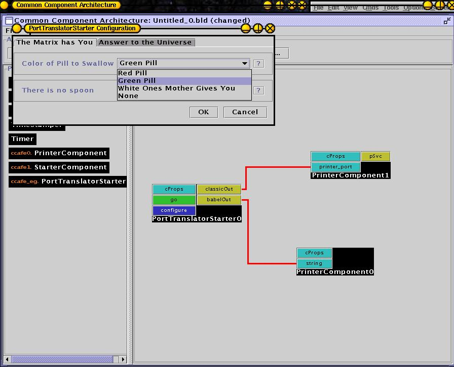

PortTranslator: A Babel gov.cca.Port that provides access to the Ccaffeiene Classic Type Components
 | C++ Mappings Only |
|---|---|
This refers only to C++ mappings of CCA SIDL components and only to the C++ mapping of the ccaffeine.ports.PortTranslator class. This is likely to be the only meaningful mapping because Classic components only exist in C++. The principle use for the ccaffeine.ports.PortTranslator is to exploit legacy Classic components and Ccaffeine services. It is critical to follow the casting rules in order for the Porttranslator to work. |
Introduction
Currently there are two major expressions of CCA-ness in Ccaffeine: the old C++ only Classic components, and the now CCA specified SIDL/Babel components. It is necessary to think of SIDL/Babel as another language (i.e. the "L" in SIDL) and special provision must be made to import and export the legacy Classic ports.

This uses one port from each of the Babel/SIDL and the Classic religions. It also imports a Classic ParameterPort service from the framework itself. This component is part of the Ccaffeine distribution, see further down for an example.
Figure 1. Ccaffeine GUI with a PortTranslatorStarter component instantiated
All Classic ports are derived from the class classic::gov::cca::Port and all of the current CCA ports are derived from gov::cca::Port . ccaffeine::ports::PortTranslator is derived from gov::cca::Port and has methods on it for communicating classic::gov::cca::Port's to the Classic religion in Ccaffeine.
The following is the PortTranslator expressed in sidl:
package ccaffeine {
package ports {
class PortTranslator implements gov.cca.Port {
/** Must be initialized with a ::ccafeopq::Port* */
void initialize(in opaque opaquePort);
/** Return a classic port. The void * returned in C++ are
* directly castable to a C++ classic::gov::cca::Port* and only
* that type. Casting to the specific type must occur after. */
opaque getClassicPort();
/** unimplemented, returns NULL. */
opaque getChasmPort();
/** Return a raw OpaquePort. The void * in C++ is directly
* castable to a ccafeopq::Port*. */
opaque getRawPort();
/** Create a new PortTranslator wrapper with a
classic::gov::cca::Port*. If the type does not match this
specifically, unexpected results may occur, or more likely,
all get methods will return NULL.*/
static PortTranslator createFromClassic(in opaque classic_Port_ptr);
/** Create a new PortTranslator wrapper with a ::ccafeopq::Port*.
If the type does not match this specifically, unexpected
results may occur, or more likely, all get methods will return
NULL. */
static PortTranslator createFromRaw(in opaque ccafeopq_Port_ptr);
}
} // package ports
} // package ccaffeine
To export a Classic port for use by the outside world is to use the createFromClassic() function to create a new ccaffeine.ports.PortTranslator wrapping a Classic classic::gov::cca::Port you have in your possession. Then use the normal addProvidesPort() call on the gov.cca.Services object to export it.
To import a Classic port from the outside world, either as a port from another component or a service port from the Ccaffeine framework, use the registerUsesPort() call on the Services object using the type name that identifies the specific Classic port you desire. If your component is successfully connected to that port, the getPort() will yield a gov::cca::Port that will cast down to a ccaffeine::ports::PortTranslator port. To state this more succinctly, when your component advertises (using registerUsesPort() ) for a Classic port, Ccaffeine recognizes that the port is foreign and automatically wraps the port in a PortTranslator. If the port is a normal SIDL port expected in the standard CCA environment, everything works as usual and no wrapping will occur.